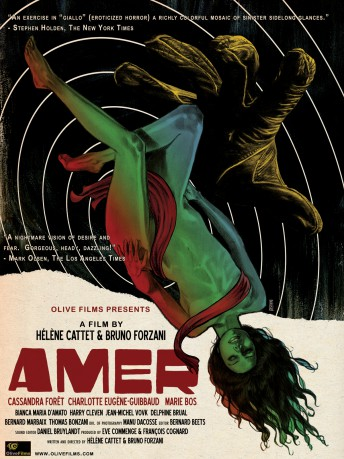

#7861 Amer - ein Albtraum aus Angst und Begierde
Alternativ: Amer
 
 IMDB-Wertung: 6.3 / 10
IMDB-Wertung: 6.3 / 10  Metascore: 0
Metascore: 0 
Three key moments, all of them sensual, define Ana's life. Her carnal search sways between reality and colored fantasies becoming more and more oppressive. A black laced hand prevents her from screaming. The wind lifts her dress and caresses her thighs. A razor blade brushes her skin, where will this chaotic and carnivorous journey leave her?
Jahr: 2009
Dauer: 90 Minuten
FSK: 16
Land: Frankreich Studio: Koch MediaTonspuren:
Untertitel:
Auflösung: 1080p (1920x816) Größe: 6389 MB
Genre: Thriller, Horror
Regisseur: Hélène Cattet, Bruno Forzani
Drehbuch: Hélène Cattet
Soundtrack:
Darsteller:
- Charlotte Eugène Guibeaud als Ana adolescente
- Marie Bos als Ana adulte
- Biancamaria D'Amato als La mère
- Cassandra Forêt als Ana enfant
- Harry Cleven als Le taximan
- Jean-Michel Vovk als Le père
- Bernard Marbaix als La grand-père mort
- Thomas Bonzani als Nono, l'adolescent
- François Cognard als La silhouette
- Delphine Brual als Graziella
- Jean Secq als L'épicier
- Béatrice Butler als L'épicière
- Charles Forzani als L'agriculteur / L'homme à la voiture rouge
- Benjamin Guyot als Éboueur
- Yves Fostier als Ëboueur
- Francesco Italiano als L'embaumeur
- Henriette Raimondé als La vieille dame derrière le rideau
- Christophe da Silva als Motard
- André Francol als Motard
- Nicolas Léandri als Motard
- Damien Gossa als Motard
- Arnaud Mariani als Motard
- Laurent Lafont als Motard
- Frédéric Miniutti als Motard
- Gordon Butler als Motard
- Elia Zanzo als Motard
- Cyril Dellerba als Motard
- Jérôme Konté Deloste als Motard
- Stéphane Peragnoli als Motard
- William Boutaleb als Motard
- Maxime Lefort als Motard
- Reda Oualla als Motard
- Florian Grolier als Motard
- Jérôme Herrera als Motard
- Mathieu Ambid als Motard
- Juan Cristobal Fontes Salinas als Motard / Passager dans le train
- Daniel Bruylandt als Motard / Passager dans le train
- Sylvain Giraud als Passager dans le train
- Stéphane Collige als Passager dans le train
- Georgy Volkaerts als Passager dans le train
- Guillaume Renoir als Passager dans le train
- Colin Lévêque als Passager dans le train
- Joël Godfroid als Passager dans le train
Datei: X:\2009(A-F)\Amer - ein Albtraum aus Angst und Begierde (2009, FSK16, 1920x816).mkv seit 29.12.2017
Festplatte: HD 2008(G-Z)-2009(A-F)
 Es gibt insgesamt 91 Filme in der Gruppe '2009(A-F)'
Es gibt insgesamt 91 Filme in der Gruppe '2009(A-F)'